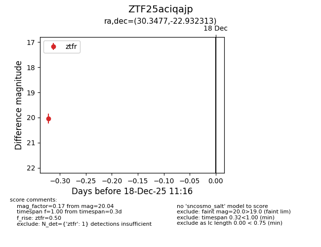
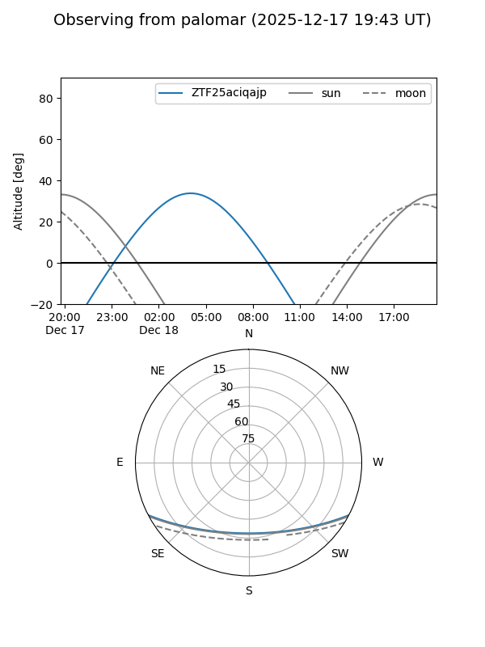

ZTF25aciqajp
Target ZTF25aciqajp at 2025-12-18 11:18
Aliases and brokers:
FINK: fink-portal.org/ZTF25aciqajp
Lasair: lasair-ztf.lsst.ac.uk/objects/ZTF25aciqajp
ALeRCE: alerce.online/object/ZTF25aciqajp
alt names
ZTF25aciqajp (ztf,fink_ztf)
Coordinates:
equatorial (ra, dec) = 30.3477,-22.93231
equatorial (HMS+DMS) = 02:01:23.46,-22:55:56.33
galactic (l, b) = (201.9398,-73.62443)
Photometry
last ztfr=20.04
1 ztfr detections
Lightcurve

Visibility


Additional plots